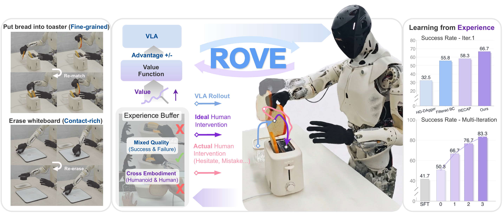
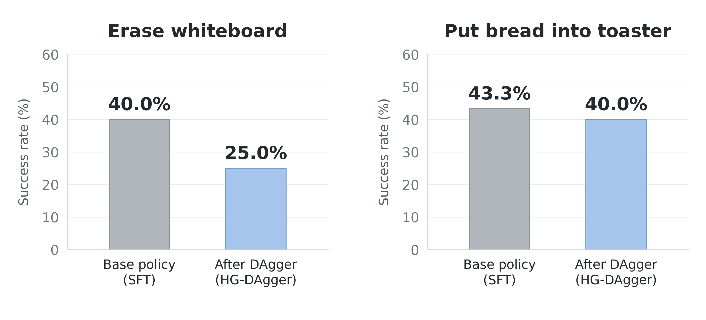
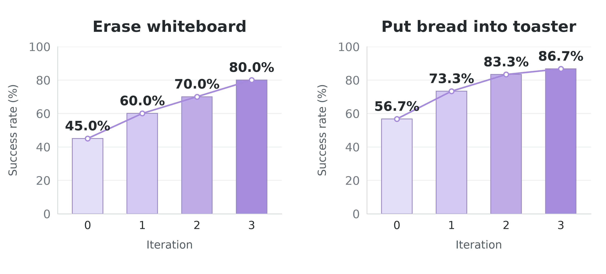
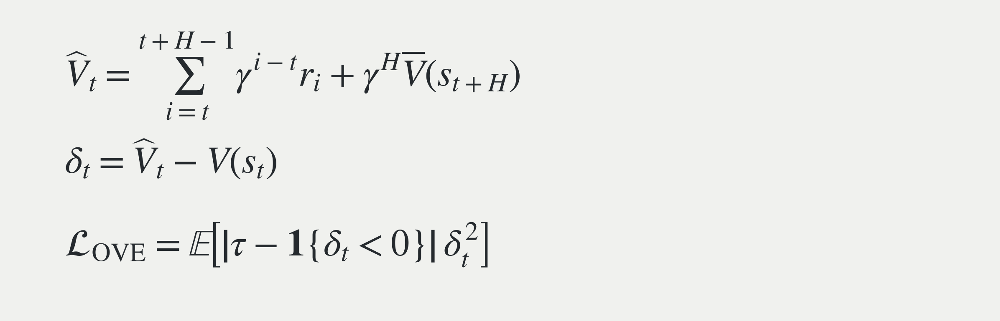
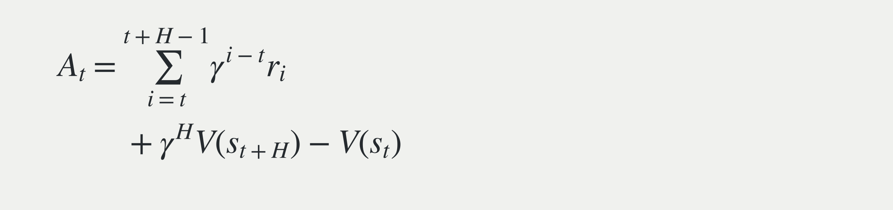
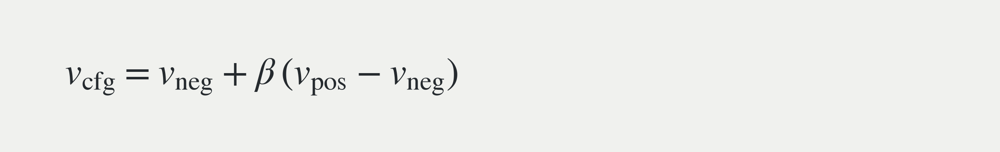
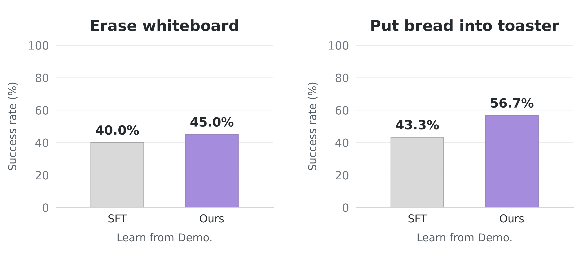

ROVE · Research Notes ·
ROVE: How Humans Help Policies Learn from Experience as Robot Embodiments Grow More Complex

This post starts with a problem we encountered while working on ROVE: as robot embodiments become more complex, how can humans still help policies learn from experience? Along the way, I will share some of my thoughts on reinforcement learning (RL) post-training.
Learning from demonstrations and DAgger
Looking back at the history of robot learning, there have always been two paths.
The first is to let robots learn what to do for themselves: RL. The second is for humans to teach them, most directly through behavior cloning (BC).
ALOHA strengthened our belief in the scalability of the second path. With smooth arm-and-gripper teleoperation systems such as ALOHA, and handheld grippers such as UMI, researchers have continued to scale up offline demonstration datasets, training increasingly capable policies with higher success rates. This has also fueled our expectations for data scaling in vision-language-action (VLA) models. ALOHA · UMI
Yet the last stretch is often the hardest. In our experience, once success rates reach around 70%, further gains become harder to achieve. Compounding error, often raised by advocates of the first path, and the complexity of the real world begin to surface. That final stretch is full of failure cases missing from offline demonstrations.
Compounding error means that mistakes accumulate: a small deviation takes the robot into a state not covered by the demonstrations, subsequent actions go wrong, and the deviation grows.
Fortunately, we already have good teleoperation systems. DAgger-style human takeovers can point the model in the right direction when it enters an out-of-distribution (OOD) state, filling gaps that offline demonstrations rarely cover. Wherever the robot makes a mistake, a human teaches it there. Everything seems to fit together. DAgger
A cloud over behavior cloning
But when we move from an arm with a gripper to a humanoid with dexterous hands, things become more complicated.
The reason is straightforward: we cannot teleoperate these embodiments or take over control with the same ease. In my view, humanoid teleoperation has only just crossed an important threshold, while dexterous-hand teleoperation still has many unresolved problems.
During a takeover, the operator must align not only the arms, but also the body posture and finger configuration. Motion-retargeting errors, joint limits, and the lack of force and tactile feedback all create a gap between knowing what to do and being able to make the robot do it immediately.
Under these conditions, the assumption behind directly imitating takeover data—human action as expert action—starts to break down.
A human eventually rescuing the task does not mean that every intermediate action was expert behavior. Retreating, probing, and hesitating after a takeover often reflect the operator adapting to the robot's current configuration.
Our experiments also showed that continuing to imitate these interventions as expert data can lower success rates and make the policy itself more hesitant. ROVE experiments
The human came to help, yet the policy learned to do worse. This was the problem we most wanted ROVE to address.

RL is more important than DAgger
This brings us back to the first path: RL.
At least for these complex embodiments, I increasingly feel that RL is more important than DAgger. We need a learning method that can identify good behavior within human experience.
From an RL perspective, any data that expands state–action coverage is meaningful, including successes, failures, and retries after failure. These data record not just actions, but also their consequences.
Human intervention data now serves not only as expert demonstrations, but also as a way to expand coverage and support exploration. Humans can bring the robot back from the edge of failure and expose it to recovery paths it has never seen before.
Different data, however, should be treated appropriately and assigned different reward labels.
In ROVE, we examined every human intervention trajectory and found a distinct adaptation phase after the operator took over. We therefore placed a large negative reward at the end of this phase, lowering the returns of the preceding segment. This prevents eventual task success from also rewarding the earlier failure and adaptation actions.
We put the boundary after the adaptation phase so that the recovery segment begins as close as possible to the point where genuine task progress resumes. Human experience is preserved, but its actions no longer have to be imitated indiscriminately. Intervention annotation in ROVE
Why iterative offline RL?
A classic approach along the RL path is on-policy RL: continually update the policy through extensive exploration. Exploration at that scale is easier in simulation or a world model. Letting a humanoid freely explore the real world is difficult: efficiency, safety, and hardware damage are each substantial challenges on their own.
Another issue is coordinating training and sampling. Policy training usually runs on servers, while environment rollouts happen in the physical world. The two are naturally separated. Meeting on-policy requirements for the sampling policy and training data requires strong infrastructure to coordinate policy versions, data collection, and update schedules.
Like RECAP in π*₀.₆, we therefore focus on iterative offline RL: collect a batch of data, update the model, collect another batch, and repeat.
This pipeline can reuse the infrastructure already built for offline BC, and is easier to scale to multiple robots and tasks. Continual learning from real-world experience does not necessarily require turning the whole training system into one that updates online in real time. π*₀.₆ and RECAP

Choosing an RL method
There are many offline RL methods. I tend to group them, very roughly, into three categories by how they are trained. This is a personal shorthand, not a rigorous or mutually exclusive taxonomy:
- Joint actor–critic iteration: value and policy updates alternate and depend on one another, as in CQL and Cal-QL.
- Learn values first, then extract a policy: value learning does not depend on new actions generated by the current actor, as in IQL.
- RL as supervised learning (SL): organize policy learning as a supervised learning problem, as in DT, RWR, and CFGRL.
Since we already had a VLA trained with BC, I wanted policy updates to follow the existing training recipe, rather than letting a newly learned critic directly steer a large model. We therefore focused more on the second and third approaches. IQL was our first thought.
An appealing aspect of IQL is that it can extract a better policy from existing data without evaluating Q-values for actions outside the dataset. It still learns Q and V, but uses expectile regression to bias V toward better actions at the current state, then updates the policy through advantage-weighted BC. IQL
Ordinary regression is closer to asking, ‘How well do these experiences do on average?’ A higher expectile is closer to asking, ‘How well can the better experiences here do?’
ROVE uses Optimistic Value Estimation (OVE), which follows a similar optimistic idea. Under the idealized assumption of deterministic dynamics, it is closely related to IQL's value target: if Q already matches its Bellman target, it can be expressed as r + γV(s′).
However, we learn only a state-value function, without explicitly learning an action-value function. OVE directly constructs a temporal-difference (TD) target from a trajectory segment and applies expectile regression:

Here, H is the segment length and V̄ is the target value network. When τ is greater than 0.5, the model places more weight on targets above its current estimate—the better future outcomes present in the data.
I see two main benefits of learning only V(s). First, value estimation is less tightly tied to a particular robot action space. Second, an action-free value function can absorb experience from different embodiments, such as human egocentric videos.
Human fingers and robot joints may not correspond one to one, but task progress—whether the bread has been placed inside, or the whiteboard has been wiped clean—can still be understood from video. In ROVE, we use human videos to help train the value function, which in turn guides the robot policy. Value learning in ROVE
This is one of the aspects I find most interesting: robots can benefit from human experience without first translating human actions into robot actions.
Making policy updates look more like supervised learning
With value learning in place, we update the policy using CFGRL-style advantage conditioning, an approach also aligned with π*₀.₆.
Instability has long been one of the most common criticisms of RL. ‘Training collapsed again’ is a familiar refrain for almost anyone getting started. Various proximal optimization and regularization techniques have been introduced to keep updates under control.
For us, though, organizing policy updates as a familiar supervised learning problem is more direct than adding more tricks. CFGRL offers a way to do exactly that. CFGRL
We first use the learned value function to compute an advantage for each segment of robot actions:

We then assign positive or negative conditions to actions based on an advantage threshold, and continue training with the standard action-prediction loss. Both high- and low-advantage data can be used for training, under different conditions.
At inference time, we combine the generative velocity fields under the positive and negative conditions to steer generation toward higher-advantage behavior:

Here, v is the velocity field in the generative process, and β controls guidance strength. Policy extraction in ROVE
During training, we are still performing familiar action prediction. But the model learns more than what someone once did in a given situation: it also learns which behaviors are more worth taking.
Of course, this approach still requires a sufficiently good value function. For large VLA models, though, separating the judgment of behavior quality from policy updates, then connecting them through supervised learning, is a direction I find compelling.
From post-training to pre-training
From another perspective, I believe RL's ability to use suboptimal data could also be incorporated into pre-training through supervised learning.
If we can attach sufficiently good value or progress signals to experience, failures, hesitation, and retries need not all be discarded. Alongside successes, they can help a model distinguish more effective behavior.
This matters especially for robots with complex embodiments and imperfect teleoperation. We can hardly demand that every human demonstration be flawless, but we can try to help models make better sense of these imperfect experiences.

Beyond introducing ROVE again, this post reflects some of my thoughts on RL and post-training. Rather than continually pursuing more perfect expert data, I hope robots can keep learning better behavior from experience that actually happened.